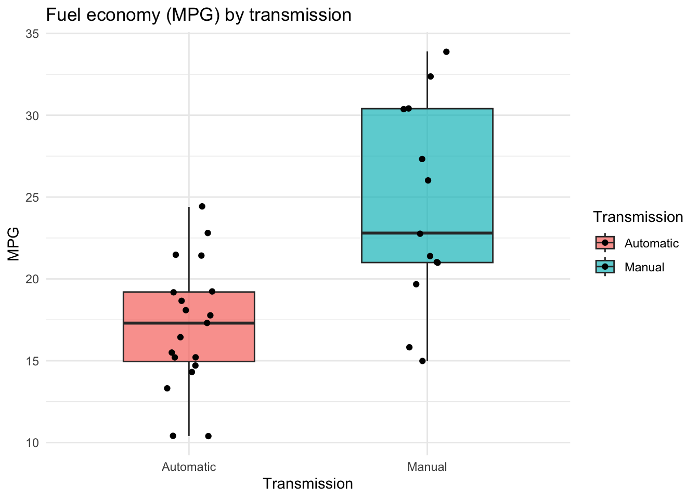
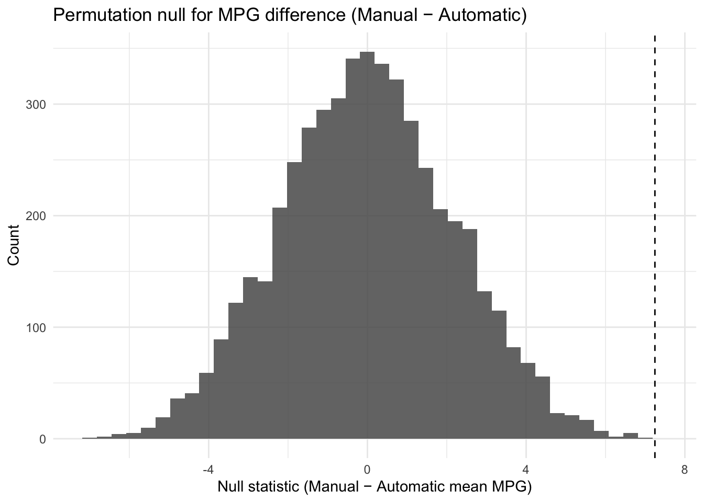

Code
set.seed(47)
library(tidyverse)
library(purrr)Analysis of mtcars MPG (Manual vs Automatic)
Guy Fuchs
October 28, 2025
Dataset page: R Datasets Package Original source: Henderson and Velleman (1981), Building Multiple Regression Models Interactively, Biometrics
I will compare MPG between manual and automatic cars in the build-in “mtcars” dataset. I will compute the observed difference (Manual - Automatic) and then simulate the null hypothesis, being “no relationship”, by permuting the transmission labels many times and recomputing the difference. I will report a one-sided p-value and show the null distribution. The main variables we will be dealing with are “mpg” (numerical fuel economy) and “am” (categorical transmission: Automatics vs Manual). This will be interesting to analyze as MPG is a practical measure of efficiency that all drivers understand to be crucial for financial decisions when it comes to purchasing cars, so this simulation will help us understand if the relationship could arise by chance with no true relationship.
cars <- as_tibble(mtcars, rownames = "model") |>
mutate(am = factor(am, c(0,1), labels = c("Automatic", "Manual")))
cars |>
head(n=5)# A tibble: 5 × 12
model mpg cyl disp hp drat wt qsec vs am gear carb
<chr> <dbl> <dbl> <dbl> <dbl> <dbl> <dbl> <dbl> <dbl> <fct> <dbl> <dbl>
1 Mazda RX4 21 6 160 110 3.9 2.62 16.5 0 Manu… 4 4
2 Mazda RX4 W… 21 6 160 110 3.9 2.88 17.0 0 Manu… 4 4
3 Datsun 710 22.8 4 108 93 3.85 2.32 18.6 1 Manu… 4 1
4 Hornet 4 Dr… 21.4 6 258 110 3.08 3.22 19.4 1 Auto… 3 1
5 Hornet Spor… 18.7 8 360 175 3.15 3.44 17.0 0 Auto… 3 2ggplot(cars, aes(x = am, y = mpg, fill = am)) +
geom_boxplot(width = 0.55, alpha = 0.7, outlier.shape = NA) +
geom_jitter(width = 0.1) +
labs(
title = "Fuel economy (MPG) by transmission",
x = "Transmission", y = "MPG", fill = "Transmission"
) +
theme_minimal()
This boxplot compares fuel economy, MPG, between cars with automatic and manual transmissions in the “mtcars” dataset. In the plot, every dot represents one car, and from the boxplot we can see that manual cars generally have higher MPG than automatic cars, with both a higher median and a wider spread of values. Thus, this suggests that manual transmissions may be more fuel-efficent on average in this dataset.
To visualize the original data:
# A tibble: 2 × 4
am n mean_mpg median_mpg
<fct> <int> <dbl> <dbl>
1 Automatic 19 17.1 17.3
2 Manual 13 24.4 22.8Now, for the simulation part:
Observed difference in means:
Null distribution under “no relationship” and one-side p-value:
B <- 5000
null_vals <- map_dbl(1:B, function(i) perm_once(cars))
p_value <- mean(null_vals >= obs)
tibble(
observed_diff = obs,
p_value_one_sided = p_value,
permutations = B
)# A tibble: 1 × 3
observed_diff p_value_one_sided permutations
<dbl> <dbl> <dbl>
1 7.24 0 5000For reference, 2e-04 is equivalent to 0.0002.
Description of the simulation:
The simulation works by repeatedly shuffling the transmission labels to represent an environment where there is no true relationship between transmission type and fuel economy (the null hypothesis). - The function mean_diff() calculates the difference in average MPG between manual and automatic cars for any given dataset. - The function perm_once() performs one permutation by randomly reassigning transmission labels and then calling mean_diff() to get a new difference value. - I used map_dbl() to repeat this process 5,000 times, because it provides a fast way to apply the same function many times and store the numeric results in a single vector. This created a simulated null distribution of MPG differences that we can compare the observed difference against to determine how different it is the under the null model.
Plotting the null distribution:
tibble(null = null_vals) |>
ggplot(aes(x = null)) +
geom_histogram(bins = 40, alpha = 0.85) +
geom_vline(xintercept = obs, linetype = "dashed") +
labs(
title = "Permutation null for MPG difference (Manual − Automatic)",
x = "Null statistic (Manual − Automatic mean MPG)",
y = "Count"
) +
theme_minimal()
This histogram shows the null distribution of differences in mean MPG between manual and automatic cars, created by randomly shuffling the transmission labels 5,000 times. The x-axis represents the simulated differences under the null hypothesis of no relationship between transmission and MPG, with the y-axis showing how often each difference occurred. The dashed vertical line marks the observed difference from the real data, which was about 7.24 MPG. This observed value lies far to the right of all simulated values, and thus suggests that such a large difference would be extremely unlikely if transmission had no effect on fuel economy.
To conclude:
In this analysis, I conducted a permutation test to determine whether cars with manual transmission have higher fuel economy, MPG, than cars with automatic transmission in the “mtcars” dataset. I computed the observed difference in mean MPG and then simulated the null hypothesis by repeatedly shuffling transmission labels and recalculating the mean difference 5,000 times. The resulting null distribution was centered around 0, while the observed difference (7.24 MPG) was far outside this range, giving a p-value less than 0.01. This indicated that it is highly unlikely the difference in MPG occurred by chance, providing very strong evidence against the null model, and ultimately that manual cars are more fuel-efficient on average.